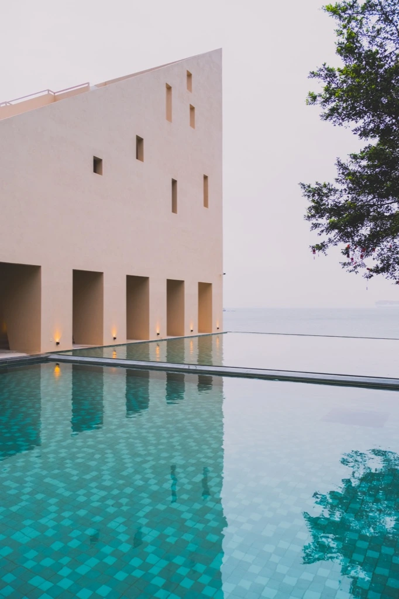
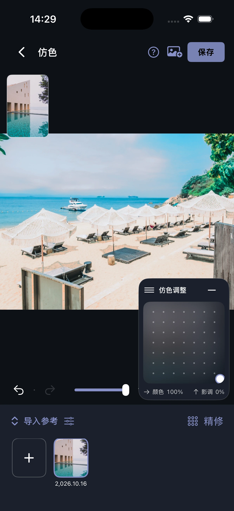
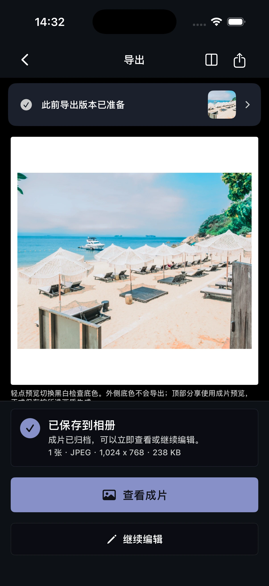

先选色彩方向，再看照片是否适合
参考图表达的是你想借鉴的颜色与明暗关系。它不会把参考照片中的人物、建筑或物体搬进原图，也不保证两张内容不同的照片看起来完全相同。
可以先选光线和场景接近的参考，再尝试差异更大的风格。一张大面积蓝天的风景照未必适合室内人像；判断依据应是自己的照片，而不是参考图本身有多好看。
在 Awaking 中完成一次仿色
跟着同一组原图、参考图与实际导出，走完这四步。
1. 选择照片与参考图
先选要调整的照片，再选一张喜欢其配色的参考图。这里用泳池与建筑的青绿色，引导海岸照片的配色；照片中的人物和场景不会因此被替换。


2. 分别调整强度、色彩与影调
先看整体方向，再调整分寸。变化过重时，先降低强度，再分别比较色彩和影调的影响。
- 强度：控制这次匹配的整体参与程度。
- 色彩：比较参考配色带来的变化。
- 影调：想保留更多原本明暗时，降低影调的参与程度。
示例参数只说明本例，不是所有照片的推荐默认值；按钮文字与位置以当前版本为准。


3. 对比原图，检查是否适合
重点看海水、沙地、白色阳伞，以及你在意的主体。更接近参考，不一定更适合自己的照片；方向不合适时，可以降低强度或换一张参考。
左右拖动图片中的手柄，或用方向键调整对比位置。
同一原图的实际仿色导出。效果随原图与参考照片而异。
4. 确认后保存，或继续精修
确认仿色方向后，可以直接保存。想继续精修这张海岸照片时，可用蒙版与画笔限定范围，例如只调整海水饱和度，保留沙地和白色阳伞的色彩。保存前再回到整图检查边缘与过渡。
截图中的“已保存到相册”说明本例交付成功。自己的作品也应等待系统确认，再判断是否保存完成。


怎样判断仿色是否适合这张照片？
把注意力放回主体：肤色是否自然，原本重要的颜色是否还表达得清楚，阴影里是否还有需要的细节。匹配更接近参考，不一定更适合原图。
如果整体方向合适、某一处太重，可以继续在编辑器里调整局部；如果方向始终不合适，换一张参考通常比不断叠加修正更容易判断。
仿色与追光有什么区别？
仿色主要借鉴色彩与影调。可选的追光辅助关注可迁移的明暗关系，不能承诺把任何照片改成另一种真实布光，也不保证重建阴影、更换灯位或完成昼夜转换。
两张照片的内容、曝光和光线差异都会影响结果。请通过原图对比判断，不把匹配当成对参考照片的逐像素复制。
照片需要上传吗？
Awaking 的参考分析、仿色与编辑在设备上完成，无需注册账号。若原片只在 iCloud，系统可能需要联网取回；主动分享到其他 App 时，由你选择接收方。